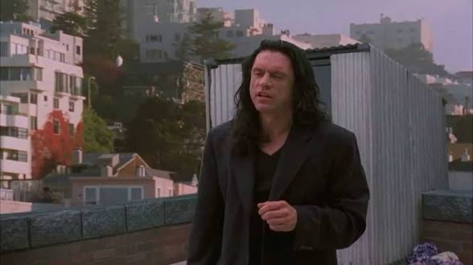

🛏️ 🛋️ 🏠 THE ROOM (2003) — CERTIFIED MGC G-2

🏛 MGC LOWER COURT OF APPEALS
- ASSET TITLE: The Room (2003) – The Official Tuxedo Football & Spoon Ledger
- OFFICIAL REGISTRY GRADE: Certified MGC G-2 (Good / heavily Circulated Melodrama Alloy)
- LOWER COURT JURISDICTION: Judge Tina, Chief of Cult Classics
- CASE FILE: #071
📜 THE FORENSIC NARRATIVE BREAKDOWN & RECOVERY
- Tina walks up 👢👢 to the steel bench, tosses an empty plastic spoon into the trash can 🗑, adjusts her 5x magnifying lens over this infamous San Francisco specimen, and shakes her head in disbelief.
1. Deceptive 35mm Surface Luster vs. Total Narrative Corrosion
- Under an initial glance, Tommy Wiseau’s The Room presents a shockingly professional surface finish. Shot simultaneously on both 35mm film and HD video with sweeping Golden Gate Bridge establishing shots and glossy bedroom lighting, the asset tricks casual viewers into expecting a serious, high-stakes romantic drama.
- However, the moment the dialogue engine starts running, the screenplay experiences catastrophic structural corrosion. Subplots materialize out of thin air and vanish without a trace—a character casually announces she definitely has breast cancer, and the script never mentions it again. Characters walk into Johnny’s apartment through unlocked doors just to deliver five lines of wooden exposition, toss a football in full tuxedos from three feet away, and exit into oblivion.
2. Uncalibrated Acting Fatigue & Green-Screen Rooftop Wear
- The performance alloy exhibits extreme, unpolished acting fatigue across every frame. Tommy Wiseau delivers every line with a hypnotic, rhythm-defying cadence—turning high-emotion betrayal scenes into unintentional stand-up comedy with legendary line readings like “You are tearing me apart, Lisa!” and “I did not hit her, I did not… Oh, hi Mark.”
- Under our strict 5x lens, the technical seams bleed right through the planchet. Instead of stepping outside onto an actual San Francisco rooftop, the production relies on glaring, poorly lit green-screen backdrops that leave heavy handling scratches across the visual layout, alongside repetitive, soft-focus love scenes that stall the second act into a complete narrative bottleneck.
3. The Definitive G-2 Junk Box Allocation
- Let the permanent base registry reflect the unvarnished reality: if judged strictly on traditional screenwriting, acting calibration, and continuity logic, The Room sits inches from total collapse. Yet the High Court refuses to drop this specimen onto the PO-1 Basal State Floor.
- Why? Because its sheer, accidental entertainment velocity is unmatched in midnight-movie history. Unlike dull, unwatchable scrap metal, The Room possesses an immortal, crowd-pleasing cult luster that packs theaters decades later. It earns a solid G-2 certification—a glorious, heavily circulated piece of cinematic folk art.
⚖️ THE CHIEF’S FINAL DECREE
Tina grabs her heavy 12-inch crescent wrench and brings it down onto the cold steel desk with a deafening, echoing metallic ring!
- 🔧💥 🥄 Case Closed. Certified MGC G-2.
“Anyway, how is your sex life?! Let the ledger show that while the plot holes could swallow the entire football stadium, Tommy Wiseau minted the undisputed heavyweight champion of midnight-movie comedy!”

• © 2026 MOVIE GRADING CONSENSUS. All Sovereign Rights Reserved.